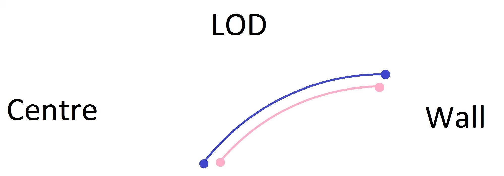
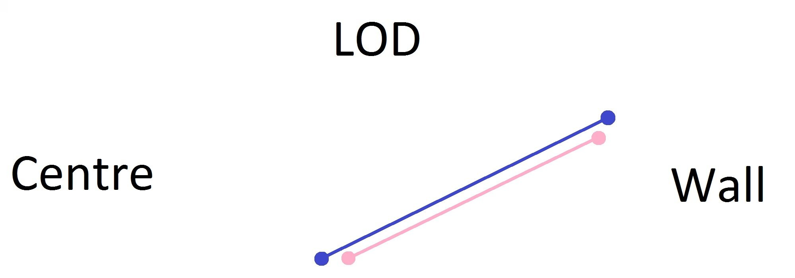
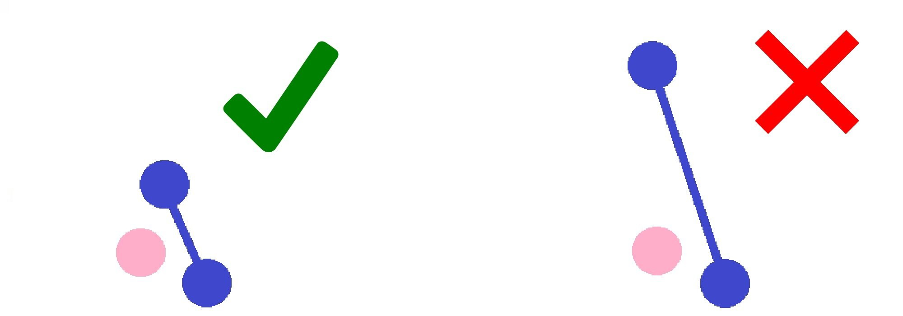

Inside & Outside of Turns
4 January 2017 (Happy New Year!)
One thing dancers often struggle with is getting around each other in Standard. In the beginning, it is difficult to get around your partner in the Natural and Reverse Turns in Viennese Waltz and Heel Turns, then as you progress you encounter more difficult figures, like the Double Reverse Spin, the Fallaway Reverse Slip Pivot, and Fleckerls, and finally at the Open level you encounter extremely rotary figures, such as Standing Spins, and Overturned Double Revers Spins. If any of these figures have given you grief, it is probably because you didn't have a proper understanding of the inside and outside of the turn. By the end of this article, you will have a thorough understanding of this mechanic, and if you practice it you will find it helps you in places you didn't even know you needed help.
Circles
We can think of any rotary figure as a circle, and when two dancers form a partnership, each of them follows a separate, yet parallel circle. Let's take steps 1-3 of the Natural Turn in Waltz. In this case, we would only use 1/8 of the circle, as shown in the diagram below. The Man commences facing DW, the Lady backing DW, and the Man ends backing LOD, the Lady facing LOD. Also, the Lady remains offset toward the Man's right throughout.
Notice that the distance the Lady travels is shorter than the distance the Man travels. This is known as being on the inside of the turn, for if their full circles were represented instead of just the eighth of a circle shown above, then the Lady's circle would fit inside the Man's. It isn't always true that the Lady is on the inside of the turn, in fact, during steps 4-6 of the Natural Turn, it will be the Man who is on the inside. Because we dance facing each other in Ballroom, the person going forward will always be on the outside of the circle, whereas the person going back will always be on the inside. If we were to dance back to back, the opposite would be true.
The idea of the circle is just a prop for learning. In actuality, the Man and Lady both travel in straight lines, as shown below. Nevertheless, the person on the inside has a shorter distance to travel.
Because the person on the inside of the turn has less distance to travel, that person must take smaller steps overall, otherwise that person will easily outrun the other, and the person on the outside of the circle will not be able to get around. Likewise, the person on the outside of the turn must travel as strongly as possible to get through. Typically, dancers can fudge this, but by turning the opposite direction on the next step they can undo all their problems. The real problem comes when they have to repeatedly dance turns in one direction, such as in Viennese Waltz. If you ever find that your Viennese Waltz starts out great, but then falls apart, the problem may be that the person on the outside of the turn isn't travelling strongly enough, or the person on the inside of the turn isn't allowing the person on the outside to pass.
The Centre of the Circle
Above we discussed the instance where both the Man and the Lady are travelling along the circumferences of their circles, but sometimes one dancer becomes the centre of the circle, and the other orbits around. Such is the case with Heel Turns and Toe Spins. In the case of a Heel Turn, one partner (typically the Lady) closes her feet and turns on a single point, while her partner dances around her, just as if he were the outside of the circle, as discussed above, but this time a smaller circle. The Toe Spin (found in the Man's second step of the Double Reverse Spin, and also the Standing Spin), is the same principle, but where the turn is made on the Ball of the foot instead of the Heel.
In both of these instances, the problem typically arises when the dancer on the outside of the turn treats the figure as if it were a regular turning figure and not a smaller circle, and ends up stepping so as to end too far away from his partner. This causes his partner to step forward, rather than turning on the spot, or for the partnership to separate.
Changing Centres
Sometimes one partner is the centre of the turn during the beginning of the figure, but another partner becomes the centre of the turn at the end. Such is the case with the Double Reverse Spin. The first step is taken straight, but on the second step, the Lady closes her feet and becomes the centre of the turn, while the Man must step around her, paying special attention to remain in contact with her without disturbing her balance. On the Lady's steps 3 and 4, the Man dances his Toe Pivot and spins in place, and he is now the centre of the turn. It is the Lady who must now take two steps around the Man, remaining in contact with him without disturbing his balance. To learn more about the Double Reverse Spin specifically, click here.
A similar principle is found in the Fallaway Reverse and Slip Pivot, where the Lady is the inside of the turn on the first three steps, and neither partner is the centre of the turn. Then at the end of the third step, she pivots on her right foot and becomes the centre of the turn before the Man places his fourth step. After they both take the fourth step, she ceases to be the centre of the turn, and they both pivot together. This quick changing of where the centre of the turn is causes tremendous grief to those just learning the figure. Often, the Man pulls the Lady off of her foot, not allowing her to pivot before she takes her fourth step, making it difficult to turn the figure the correct amount.
Yet another difficult figure that changes centres quickly is the Fleckerl in Viennese Waltz. The case of the Reverse and Natural Fleckerl is the same, in that on the Man's first three steps, the Ball of his front foot is the centre of the circle, and everything else turns around that point. On the next three steps, the Ball of the Lady's front foot is the centre of the circle, and the Man must rotate around that point.
This probably makes sense now that you are reading it, but you would be surprised how many dancers treat the these figures as if they consisted of one single action, instead of many. It is the recognition and performance of these actions as separate that will allow the partnership to rotate properly, without congestion or loss of balance.
Check Your Routines
Now that you understand this principle, check your routine. Almost every figure in your routine probably has some sort of rotation, and you need to know who is on the inside and who is on the outside, as well as if ever someone becomes the centre of the circle. Even basic figures like the Quarter Turn to the Right in Quickstep and the Feather Step in Foxtrot have a certain amount of rotation, and realizing that can make all the difference in how your dancing feels and looks.